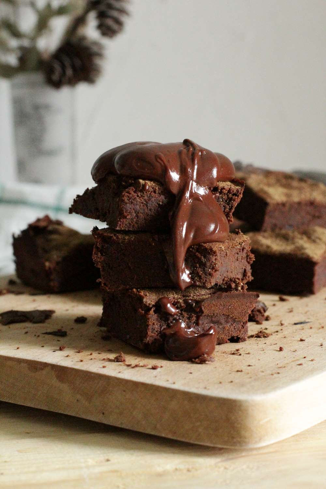
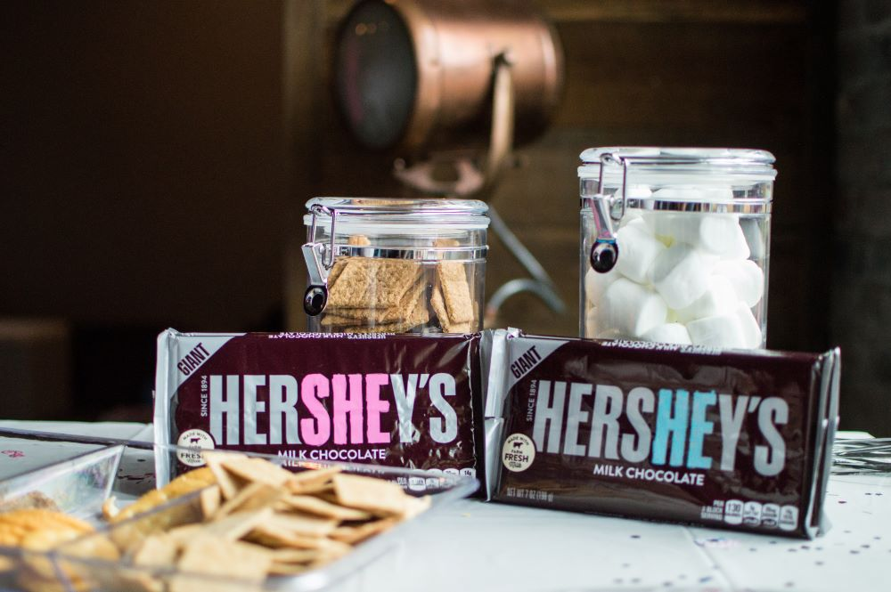

Whited Brownies
- 2 boxes of triple chunk brownie mix,
- 3 eggs,
- 2/3 cup vegetable oil,
- 1/2 cup cold water,
- 1 cup chocolate chips,
- 1 cup peanut butter,
- 2 cups Rice Krispies,
- 1/2 bag mini marshmellows
- In a large bowl combine the brownie mix, eggs, oil, and water.
- Add mixture to greased baking pan and follow box instructions for baking. (Temps and times
may vary due to altitude)
- While the brownies are baking, melt together the chocolate chips and peanut butter until homogenous.
- Remove from heat and mix in the Rice Krispies.
- Once brownies are done, remove from oven and add a layer of mini marshmellows.
- Return to oven until marshmellows are puffy and about to toast.
- Remove from oven and spread the chocolate/peanut butter mixture over top, making sure to reach the edges.
- Place in fridge for at least 4 hours or best results if left overnight.

Hershey Bar Pie
- 1 graham cracker crust
- 6 Hershey's Milk Chocolate bars
- 1 16 oz tub of whipped cream
- Break the chocolate bars into small pieces and place into a large bowl.
- Melt the chocolate in a double boiler (Or if you can't do this place the
chocolate into a small pot and melt carefully on low heat).
- In a seperate bowl, mix the chocolate and whipped cream together.
- Add the mixture into the pie curst and smooth it out.
- Place pie in the fridge to chill for at least 4 hours.